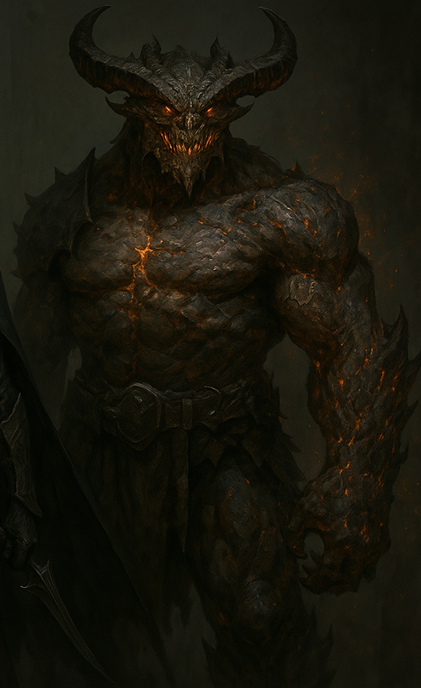

The Shattered Oath
Description
The land of Vael'tharis lies in ruins, haunted by an ancient prophecy known as the Shattered Oath. Three warriors, each burdened with a dark past, cross paths in a quest to either rebuild the world or plunge it into eternal chaos.
Prologue: The Prophecy of Vael’tharis The land of Vael’tharis had once been a realm of prosperity, its skies painted with golden sunrises and its fields rich with emerald growth. But fate had no mercy for kingdoms built on fragile oaths. The prophecy, long whispered among sages and feared by kings, spoke of three warriors whose paths would collide, shaping the future of the land. Would they rebuild the broken world? Or would they plunge it into chaos?
Characters
Kaelith, the Forsaken Sentinel
“Redemption is a path carved through suffering.” Once, Kaelith had been a knight of honor, a guardian of the Sunkeep, an ancient fortress bathed in golden light. He had sworn an unbreakable oath to protect the High King. Yet betrayal had come not from the shadows, but from within. His own order, the Celestial Sentinels, branded him a traitor, casting him into the Abyssal Ruins, a forsaken realm beneath the world where the lost and the damned roamed. The years in darkness reshaped him. His once-polished golden armor now bore the scars of countless battles, and his blade, once a symbol of purity, now pulsed with the cursed remnants of the sun that had forsaken him. Kaelith emerged from the abyss, neither living nor dead, driven by the singular goal of reclaiming his honor. He hunted those who betrayed him, his sword whispering vengeance with every strike. But redemption was a fragile dream, and as his journey led him toward the heart of Vael’tharis, he would soon learn that fate was not done with him.
Nyssa, the Whispering Veil
A mysterious assassin from the Moonshadow Syndicate, Nyssa moves like a living shadow. She wields twin cursed daggers that feed on fear, allowing her to phase between realms for a short time. Despite her cold demeanor, she seeks vengeance for her fallen kin.
“Vengeance is not justice. It is a lesson taught with blood.” Born in the shadows of Vael’shannar, the city of assassins, Nyssa had been raised in the brutal world of the Moonshadow Syndicate. The syndicate’s creed was simple: loyalty or death. She had once been their finest blade, a ghost in the night. But when the High Council betrayed her people, branding them as heretics and purging their entire sect, Nyssa alone survived. The twin daggers she wielded, Nightfang and Dusk, were relics of her fallen kin, cursed blades that fed on fear itself. With every kill, their edges whispered the voices of the dead, reminding her of the vengeance she still owed. She moved unseen, slipping between realms with a mastery of veil-stepping, an art lost to time. The shadows obeyed her, but her heart had long since hardened. Yet, as she pursued the Council’s remnants, her path led her to Kaelith, a man with nothing left but his own shattered purpose. And soon, they would both be drawn toward the one whose power threatened to break the world itself.

Vorrak, the Hollowed Tyrant
“What is a king without a throne? A monster seeking a grave.” Once a warlord feared across the lands, Vorrak had conquered cities, razed kingdoms, and drowned battlefields in blood. His power was unmatched, his armies endless. But his ambition had led him to a forbidden ritual—he had consumed the heart of a dying Elder Dragon, seeking immortality. Instead, the curse hollowed him. His body became something beyond mortal—his flesh blackened and smoldering, his veins burning with draconic rage. His voice shook the very air, a guttural echo of a beast caged in a dying man’s shell. Yet immortality was a cruel trick. His body withered with every battle, his power unstable, his mind a battlefield of two souls—the man he was, and the dragon that sought to devour him. Now, he sought one thing: a worthy death. And if he could not find it, he would bring Vael’tharis to ruin, so that the gods themselves would be forced to strike him down.

To Be Continued… A land still in ruin. A prophecy yet unfulfilled. And a war far from over. Would they rebuild the world? Or become its destruction? The shattered oath had yet to be reforged.
Created by Kristian Angelov